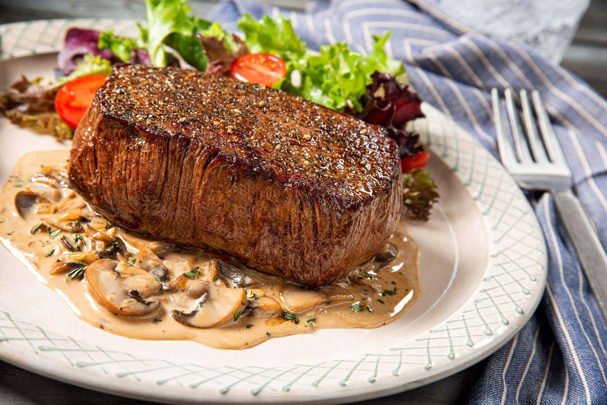

Sirloin Steak
R179.99 : 200g
R249.99 : 300g
Our amazing Rump or sirloin topped with a slice of melted cheese and creamy pepper or mushroom sauce just to fit your tastebuds
What makes it special!
Sirloin steak is a meal that many meat lovers hold up on a pedestal. It’s prized by connoisseurs the world over. So, what differentiates it from other cuts of a cow? Sirloin steak is considered to be by far the most tender part of the animal. Not to mention the fact that it’s incredibly juicy and flavorful. If you were to ask a meat lover what their top qualities of a certain cut were, they’d probably list those three. Sirloin steaks are the magnum opus of meat cuts for that reason!